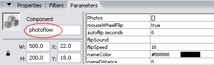
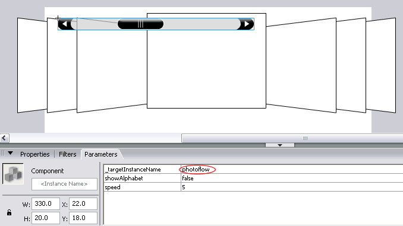

2. Give the photoFlow component that's on the stage an instance name - for example: photoflow
An additional component is installed together with the photoFlow which allows users to scroll through the images. This tutorial explains how to add the photoFlowScrollbar to your project.
1. Open your Flash file in which you are using the photoFlow component, or create a new Flash file and drag the photoFlow component onto the stage.
2. Give the photoFlow component that's on the stage an instance name - for example: photoflow

3. Locate the photoFlowScrollbar component in the photoFlow folder of the Components panel and drag it from the Components panel, dropping it on top of the photoFlow component that's on the stage. The photoFlowScrollbar will automatically snap onto the photoFlow component and the instance name of the photoFlow component will automatically be entered in the _targetInstanceName parameter of the photoFlowScrollbar.

4. Drag the photoFlowScrollBar to your desired position on the stage.
If the position in which you wish to place the photoFlowScrollBar causes the scrollbar to snap to the photoFlow, can should resize the photoFlow to avoid this situation. Resizing the photoFlow will not affect to photoFlow's size or behaviour as this is done only through the parameters of the photoFlow.
5. Press Ctrl+Enter (Win) or Cmnd+Enter (Mac) to test your movie.
Note: Please see the section on skinning the scrollbar.